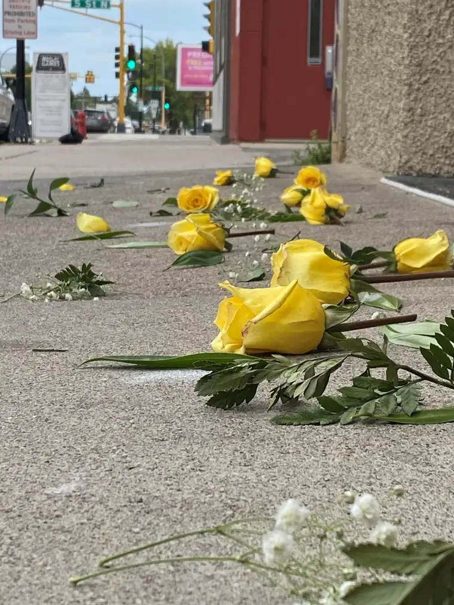

One by one, the abortion escorts’ rainbow vests came off and were placed in the plastic storage tub. One by one, the mothers whose wombs had, just that morning, harbored a tiny, tender life, walked away, weighed down by their choice. One by one, the last workers in our state’s only abortion facility had slipped away, another week’s worth of abortion appointments crossed off their list.
It was the Feast of Our Lady of Sorrows. A couple hours earlier, my sidewalk sister Ann and I had renewed our consecration to Mary before the mosaic of Our Blessed Mother near the altar at St. Mary’s Cathedral. Now, we had returned to the sidewalk of the Red River Women’s Clinic, hoping for a miracle.
Though everyone else had departed by this time, including the large college group that had, thanks be to God, come to pray the Rosary, we were still in the middle of a recitation of the Seven Sorrows Rosary. As we made our way through the beads, reflecting on the sorrows we were carrying deeply this day, another joined us. Silently, she stood beside us, a bundle of yellow roses in her hands.
As we prayed our prayers, our friend fell to her knees, the roses still with her, as she uttered her own quiet, spontaneous prayer, tears forming in her eyes. As we finished our Rosary, I asked, nodding to the flowers, “What are they for?”
“A memorial,” she answered.
After a while, she got up and walked up to the building in which babies earlier had been either poisoned or punctured, and began tearing green leaves off branches of the bouquet, scattering them upon the ground in a jagged line. Next came the soft baby’s breath. Finally, she cut the roses, so that only the yellow buds with small stems remained, and began strategically placing them among the greens.

That’s when I began to feel deeply the symbolism of her actions: yellow, a color that represents light and purity and stands for the babies and their sweet, innocent lives; green, a vibrant color indicative of life, though lives cut short; and baby’s breath, starkly calling to mind the babies’ breaths that had been so unfairly stopped.
Watching these pieces of roses and stems fall to the ground, the reality of what was happening in this unanticipated memorial began to penetrate my soul, a heaviness spreading throughout. So often, we come to the sidewalk and leave saddened at the end of our shift, but not having purposefully stopped to mourn the losses. But now, our friend had, in the gentlest manner, helped us pause to recall those whose lives have been forever altered or taken here this day.
“This is what we do at funerals, right?” she had remarked. Indeed, we offer flowers, we pray, we cry. We cannot bury these dead, but I would think God would honor our attempts to fulfill this corporeal work of mercy, which he has summoned us to do, in this alternative way. These little ones deserve no less.
What struck me most about this moment was the powerlessness of how we all feel about abortion. We come with hope to the sidewalk, but the cruelty of it often happens despite our efforts. Saves are few and far between. And yet, we are not powerless. We can all do something.
With October being Respect Life Month, events are happening throughout the diocese to bring this paramount cause to the forefront. If your heart has been moved by abortion in any way, if it has been broken as is natural, I urge you to commit to doing something.
Among the many events happening, the Shanley Teens for Life “Cupcakes for Life” will take place at 7 p.m. on Oct. 25, at Sts. Anne and Joachim Church in Fargo. I will be among those sharing insights about abortion and how we can approach this difficult topic. I would be glad to see you there. In the meantime, please pray for the babies, the moms, the dads, the workers, and our broken, hurting world.